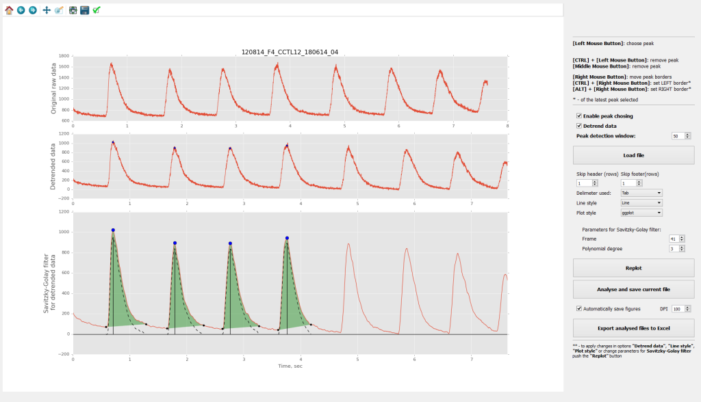

PeakInspector represents a simple standalone application for interactive analysis of peak propetries in time-series data. PeakInspector allow to preprocess data before the analysis by baseline normalising, linear detrending (optionally) and smoothing data (by Savitzky–Golay filter).
PeakInspector was written by Anton Salykin, Ph.D. (Masaryk University, Czech Republic).
Release 18.11.2015
The first version of PeakInspecor is now available. This software a beta release, meaning that it is a work in progress, and new features will be added in the near future. To report a bugs, discuss this software or suggest new features please directly contact me a{dot}salykin[at]mail{dot}muni{dot}cz.

Requirements
PeakInspector is written in Python 3.x, and generally platform-independent. The following packages are required:
- PyQt4
- numpy
- scipy
- matplotlib
Installation
It is possible to use PeakInspector by simple downloading the archive (on the top page), or clone this reppository.
Working with PeakIspector
Explanation of every option on the graphical interface could be obtained by simple cursor-over the option and waiting for 1-2 seconds. Explanation tip will automatically pop-up.
- Load data
- Analyse peaks
- Save ouput
Data file could be loaded by simple click on "Load file" button. File should be in text format, and contain 1 (time invariant, data indeces will be considered on time scale) or 2 columns of data (in case specifically recorded time). Delimeter between columns could be explicitly chosen. If data contain header, or any additional information at the beginning or end of the file one could skip this rows by specifying how many rows to skip. Data will be loaded and preprocessed automatically.
Dy default the option "Detrend data" is enabled. As well as some options for Savitzky–Golay filter are also specified. If not needed, user can disable "Detrend data" option, as well as change parameters for Savitzky–Golay filter. To see the changed graphical ouput user have to press the "Replot" button.
The general procedure of peak analysis include clicking by the left mouse button near the peak local maximum (with enabled option "Enable peak choosing"). Than
All files analysed are considered as a batch (one treatment, one biological repetition, etc), and clicking on the button "Analyse and save file" save currenly analysed file into table inside PeakInspector, and add it to previously analysed files from the same batch. To save the all analysed peak from the batch as a table (for now the default output is Excel file) user have to click the "Export analysed files to Excel".
Features to be added in the future
- Choosing desired output format
- Choosing desired peak properties
- Add other parameters of peaks to analyse